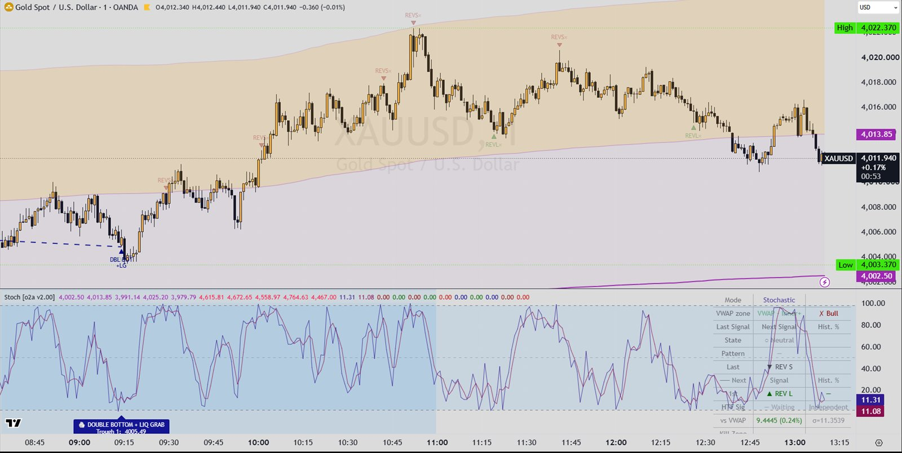

Indicators / Stochastic
Oscillator · VWAPStochastic v2.00
A classic Stochastic (or optional Stochastic RSI) in its own pane that fires a reversal signal when %K leaves the overbought or oversold zone. It also spots double tops and double bottoms where price pokes past the previous peak and closes back (a liquidity grab), and runs the same signals on a higher timeframe. An anchored VWAP with bands, an optional higher-timeframe swing VWAP, kill-zone shading and a status table help filter and read the signals.

What it draws
- Oscillator pane: %K line (navy) and %D line (maroon), Overbought / 50 / Oversold lines with a shaded background between them
- Oscillator pane: REV SHORT / REV LONG labels (number of zone entries in the cycle and price change since the zone was entered) and DOUBLE TOP / DOUBLE BOTTOM + LIQ GRAB labels (peak 1, wick, close, rejection in points)
- Oscillator pane: kill-zone background colour (Asia, London, NY AM, custom) with the zone name at its start
- Price chart: anchored VWAP line with inner (1x) and outer (2x) bands, a light fill between the inner bands and an optional 'liquidity band' fill between inner and outer bands
- Price chart: higher-timeframe Swing VWAP step line with inner / outer bands, green when the swing direction is up and red when down
- Price chart: triangle markers 'REV S' / 'REV L', faded smaller 'REVS×' / 'REVL×' markers when a reversal was blocked by a filter, and 'DBL TOP +LG' / 'DBL BOT +LG' markers
- Price chart: dashed line joining the two peaks (or troughs) of a double top / bottom
- Price chart: diamond markers 'HTF REV L/S' and 'HTF DBL B/T', an HTF label with the timeframe (and both peak / trough prices for doubles), and dashed horizontal lines at both HTF peaks / troughs
- Status table (top right): mode, VWAP zone of price and long-filter pass, zone state (OB/OS with entry count), current pattern, last signal and the expected next signal, HTF signal state, distance from VWAP, active kill zone (New York time), HTF swing trend and which directions the filter allows. Note: as coded, the 'Hist. %' cell divides a count by itself, so it shows 100% once any transition has happened
- Hidden plot 'Signal Point' (+1 long, -1 short, 0 none) for use by other scripts
Signals
- REV Short
- %K crosses back down below the Overbought level (closes the overbought visit), the same exit is not a double top, and price passes the active filters: close at or below the chosen VWAP threshold (VWAP / upper 1σ / upper 2σ, or no VWAP filter) and the HTF Swing VWAP filter (HTF swing trend down, or close below the HTF VWAP, or off). If a filter blocks it, a faded 'REVS×' marker is drawn instead.
- REV Long
- Mirror of REV Short: %K crosses back up above the Oversold level, the exit is not a double bottom, and close is at or above the chosen VWAP threshold and passes the HTF Swing VWAP filter. Blocked exits show a faded 'REVL×' marker.
- DBL TOP + LG (double top with liquidity grab)
- On an overbought exit: the highest high of this overbought visit is within the Double Top/Bot Tolerance % of the previous overbought visit's highest high, AND the exit bar's high reaches the previous peak but the bar closes below it. Not subject to the VWAP or HTF filters.
- DBL BOT + LG (double bottom with liquidity grab)
- Mirror on an oversold exit: the lowest low of this oversold visit is within the tolerance % of the previous visit's lowest low, AND the exit bar's low reaches the previous trough but the bar closes above it. Not subject to the VWAP or HTF filters.
- HTF REV Long / HTF REV Short
- The same REV rule computed on the HTF Signal timeframe's own %K, using only the last completed HTF candle. It shows once, on the first chart bar after that HTF candle closes. Each type can be switched off. If 'Require HTF + CTF alignment' is on, it is shown only when a chart-timeframe long (or short) signal fires on that same bar. Not subject to the VWAP filters.
- HTF DBL BOT / HTF DBL TOP
- The double bottom / double top + liquidity grab rule computed on the HTF Signal timeframe, with the same once-per-HTF-close and optional alignment rules as HTF REV.
- Signal Point output
- +1 when a chart-timeframe DBL BOT, a REV Long that is not a DBL BOT, or a new HTF long fires (each type has an on/off switch in 'Signal Connector'); -1 for the short equivalents; otherwise 0.
Main settings
| Setting | Default | What it does |
|---|---|---|
| Use StochRSI (instead of Stochastic) | off | Switches the oscillator from Stochastic of price to Stochastic of RSI (RSI Length 14, Stoch Length 14, smoothing 3/3). |
| %K Length / %K Smoothing / %D Smoothing | 14 / 1 / 3 | Stochastic lookback and smoothing of %K and %D. |
| Overbought Level / Oversold Level | 98 / 2 | Zone levels; signals fire when %K leaves these zones. |
| Double Top/Bot Tolerance % | 0.5 | How close (in % of price) two consecutive zone peaks / troughs must be to count as a double. |
| Anchor (Anchored VWAP) | Week | When the VWAP restarts: Session, Week, Month, Quarter, Year, or the start of Asia / London / NY AM / custom kill zone. |
| Band Type / Inner / Outer Band Multiplier | Std Dev / 1.0 / 2.0 | VWAP band width from standard deviation, ATR or a percentage of price. |
| Filter signals by | VWAP | Off, VWAP, ±1σ or ±2σ: longs need close at/above the level, shorts at/below it. |
| HTF Timeframe (HTF Signal) | 60 | Timeframe used for the HTF REV / DBL signals. |
| Require HTF + CTF alignment | off | Only show an HTF signal when a chart-timeframe signal of the same direction fires on the same bar. |
| Enable HTF Swing VWAP / HTF Timeframe / Use as Signal Filter | on / D / Trend | Higher-timeframe swing-anchored VWAP (Swing Period 55, APT 21) used as a filter: Trend (swing direction) or Price vs VWAP. |
Timeframes
Oscillator and the main signals run on the chart timeframe. The HTF signal timeframe is an input (default 60 minutes). The HTF Swing VWAP has its own timeframe input (default Daily). The anchored VWAP resets by session, week, month, quarter, year or at a kill-zone start. Kill zones are fixed in New York time: Asia 20:00-00:00, London 02:00-05:00, NY AM 08:30-11:00, plus a custom window.
Alerts
Pine: no alertcondition() or alert() calls in the source. The hidden 'Signal Point' plot (+1/-1/0) can be read by other scripts. MT5: no alerts in the port.
Closed candles and repainting
- HTF signals use request.security with lookahead_on on values shifted back one HTF bar ([1]), so they only use completed HTF candles and appear on the first chart bar after the HTF candle closes.
- The HTF Swing VWAP uses request.security with lookahead_off and no shift: on the live chart it follows the still-forming HTF candle and can change until that candle closes.
- Chart-timeframe REV and DBL signals are evaluated on every bar with no closed-bar check, so on the live (unclosed) bar a marker can appear or disappear until the bar closes.
- The anchored VWAP is cumulative and updates within the live bar.
On MetaTrader 5
- Two MT5 indicators share one engine file: Stoch_o2a_v200.mq5 (the pane: %K/%D, levels, pane labels, kill zones, table) and Stoch_o2a_v200_Chart.mq5 (the chart: VWAP and bands, swing VWAP, signal markers, HTF labels/lines), because an MT5 indicator draws its buffers in one window only.
- MT5-only: draws the higher-timeframe candle of every HTF signal on the chart.
- MT5-only: colour theme Auto / Light / Dark (Auto reads the chart background); dark-chart presets included.
- MT5-only: a ±3σ VWAP band (display only, not a filter).
- MT5-only: 'Add half the bar spread' option, because MT5 bars are bid prices while TradingView plots mid prices; New York time is set as server time minus an hour offset (default 7, FundingPips); chart bars calculated default 20,000; optional CSV debug dump.
- The MT5 defaults are the author's live chart settings, not the Pine defaults: Overbought/Oversold 95/5, tolerance 0.2%, RSI length 5, VWAP anchor Session, liquidity band off, HTF signal timeframe 15 with alignment required, HTF Swing VWAP off, kill zones off.
- README check against TradingView (XAUUSD M1): most signals land on the same bar; the differences were traced to price-feed and volume differences between brokers (tick volume vs TradingView volume moves the VWAP).